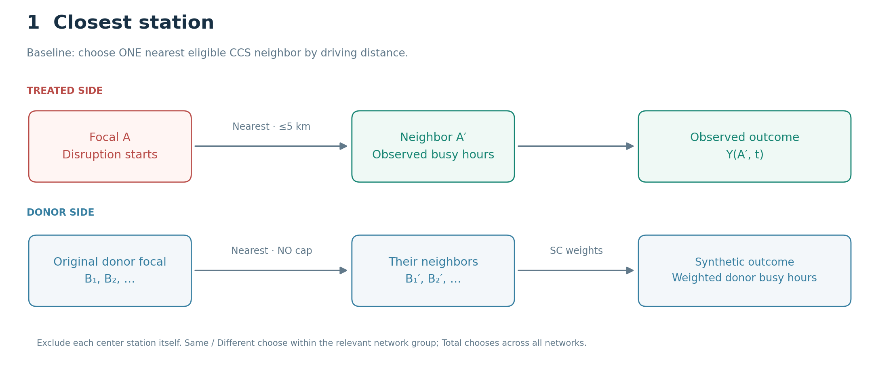
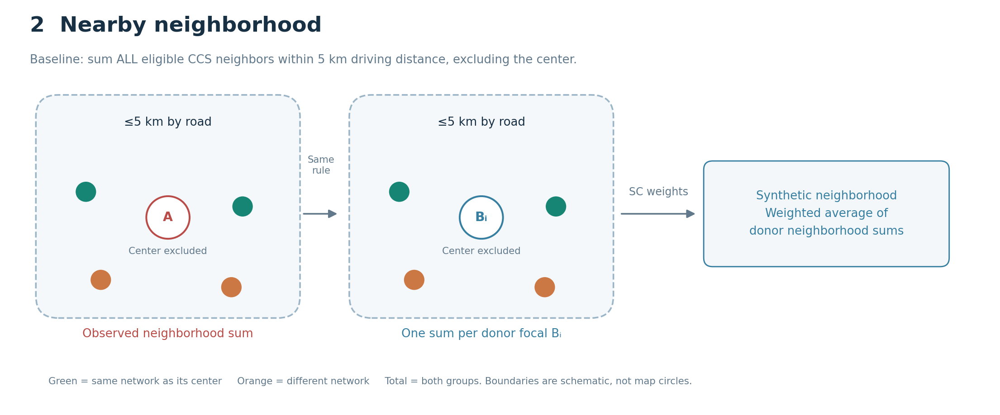

EV charging spillover effects
How it works · Diagrams, effect calculation & settings
Question: When a focal charging station stops operating, does charging use change at its closest neighbor or across its surrounding neighborhood?
1. Closest station — baseline example

A is the focal station with a disruption. Find its nearest eligible neighbor A′ and study that neighbor’s daily busy hours. Keep the event only if A′ is within 5 km by road of A.
For each focal station B in A’s original donor pool, find its own nearest eligible neighbor B′. Combine those neighbors’ busy hours to match A′ before the disruption. This weighted combination is A′’s synthetic control: its estimated use without A’s disruption. The 5 km cap applies to A → A′ only; B → B′ has no cap.
2. Nearby neighborhood — baseline example

For A, add the daily busy hours of all eligible neighbors within 5 km by road. This neighborhood sum is the outcome; A itself is excluded.
For every original donor focal B, construct the same 5 km neighborhood sum, excluding B itself. Fit a weighted combination of these donor sums to A’s neighborhood before the disruption. Here the same 5 km boundary applies on both sides.
The diagrams illustrate the baseline. They are schematic, not maps. All neighbor candidates are CCS stations. Original donor focal stations B share A’s network; “same” and “different” always refer to a neighbor’s network relative to its own center.
3. How is the effect calculated?
Let Ye,t be the observed busy hours for event e at relative day t: one neighbor’s use for Closest, or the neighborhood sum for Nearby. Let Ydonore,j,t be the corresponding outcome around donor focal j.
Event effect: τe,t = Ye,t − Ŷe,t(0)
Reported effect: ATTt = (1 / N) ∑e τe,t
The weights are nonnegative and sum to one. They are chosen to match observed use on days −5, −4, −3, −2, then kept fixed after the disruption. The chart reports the average event effect in busy hours per day.
Example: Observed use of 12 hours minus synthetic use of 10 hours gives an effect of +2 busy hours. A positive effect means more use than the synthetic control; a negative effect means less use.
4. What do the settings mean?
- Distance measurement: Baseline uses OSRM driving-route distance, measured along roads rather than directly between coordinates.
- Search limit: Baseline is ≤5 km. Closest selects one nearest station in the chosen network group, then applies the limit to the treated side. Nearby includes every eligible neighbor inside the limit on both treated and donor sides. Each center station is excluded.
- Network outcome: Same, Different and Total define which neighbors are eligible. Common compares Same and Different using the same retained events; it is not a fourth type of neighbor.
- Fit window: Use days −5, −4, −3, −2 to choose SC weights. Day −1 is completely excluded from fitting and effect estimates. Day 0 is the day the focal station’s disruption begins.
- Excluded dates: Drop events whose disruptions start from December 26, 2024 through January 9, 2025, inclusive.
- Pre-fit filter: Remove events whose synthetic control fits poorly before the disruption. Keep pre-RMSE ≤ √3 × the mean pre-RMSE among successfully fitted events. Lower RMSE means a closer pre-treatment match. The MSE diagnostic plots the squared error and squared cutoff.
- Minimum disruption duration: “≥3 days,” for example, keeps disruptions lasting at least 3 days and plots day 0, 1 and 2. Each panel uses events with complete outcomes for its entire displayed window. Changing duration changes the event sample, including the sample used for the pre-treatment points.
- Confidence intervals: The post-treatment error bars show pointwise 95% intervals from 1,000 cluster bootstrap draws. Resample clusters while keeping SC weights fixed. Closest independent results cluster by neighbor A′; Nearby and Common cluster by focal A. Common resamples the two outcomes together.
| Outcome | Closest station | Nearby neighborhood |
|---|---|---|
| Same | One nearest neighbor on the center’s network. | Sum of same-network neighbors. |
| Different | One nearest neighbor on another network. | Sum of different-network neighbors. |
| Total | One nearest neighbor, regardless of network. This is not Same + Different. | Sum of all included neighbors. |
| Common | Intersect the retained Same and Different events; preserve their separately fitted controls. | Require both groups, use the same eligible donor focal pool for the two separate fits, and retain events passing both fit filters. |
Availability: a nearest neighbor missing required pre/day-0 data makes that Closest unit unusable; it is not replaced by the next station. Nearby drops individual members missing a fit day or day 0, then fixes the remaining membership. An empty group is unusable. Later missing outcomes remove the event from the relevant duration panel. No values are filled with zero. Closest fit cutoffs are determined before the treated-distance filter; EVgo keeps the baseline cutoffs.
5. Baseline and robustness checks
Each robustness check changes the item below relative to baseline. The pre-treatment window, excluded dates, fit rule and bootstrap procedure stay the same.
| Configuration | What changes? | Closest station | Nearby neighborhood |
|---|---|---|---|
| Baseline | Driving-route distance, 5 km; all focal networks. | Nearest by driving distance; treated neighbor ≤5 km. | Sum within 5 km by road around A and each B. |
| 10 km | Increase the driving-distance limit from 5 to 10 km. | Treated neighbor ≤10 km; donors still have no cap. | Sum within 10 km around both A and B. |
| EVgo only | Keep only events where focal A belongs to EVgo. | Baseline selection and weights; subset the focal events. | Baseline neighborhoods and weights; subset the focal events. |
| Straight-line distance | Replace driving distance with geographic straight-line distance; keep 5 km. | Re-select nearest neighbors by straight-line distance; treated cap 5 km. | Rebuild both neighborhoods within 5 km straight-line distance. |
| 20-minute driving time | Replace distance with estimated driving time; limit 20 minutes. | Re-select time-nearest neighbors; treated trip ≤20 min; donor trips uncapped. | Rebuild both neighborhoods using estimated trips ≤20 min. |
OSRM driving time is a road-model estimate, not observed commuting time or live congestion. The sidebar selects already estimated configurations; it does not change or rerun model parameters.
Pointwise 95% confidence intervals shown for post-treatment days. Display range: −1 to 3 hours; intervals may extend beyond the range.
Day-0 estimate · Selected duration sample
Sample retention by duration
Diagnostics use the day-0 retained sample and do not change with the duration selection.